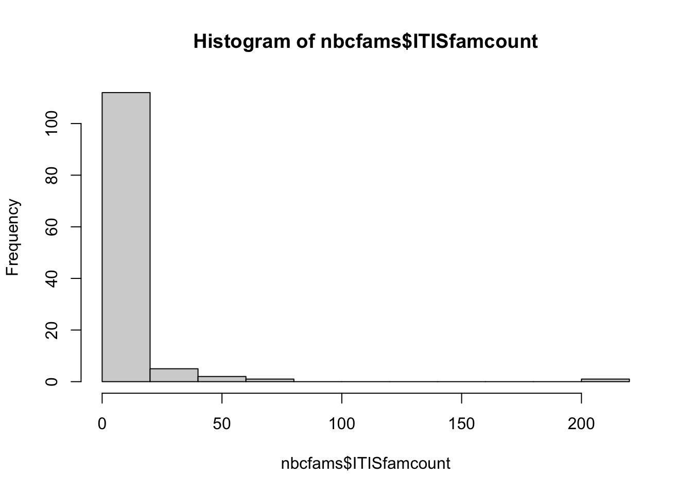
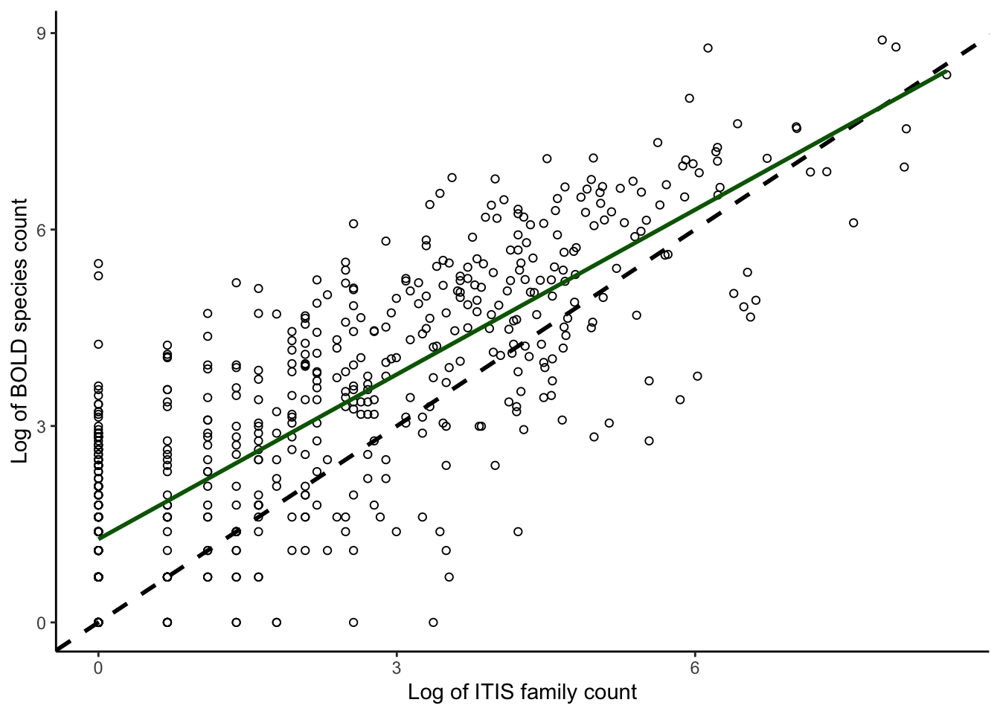
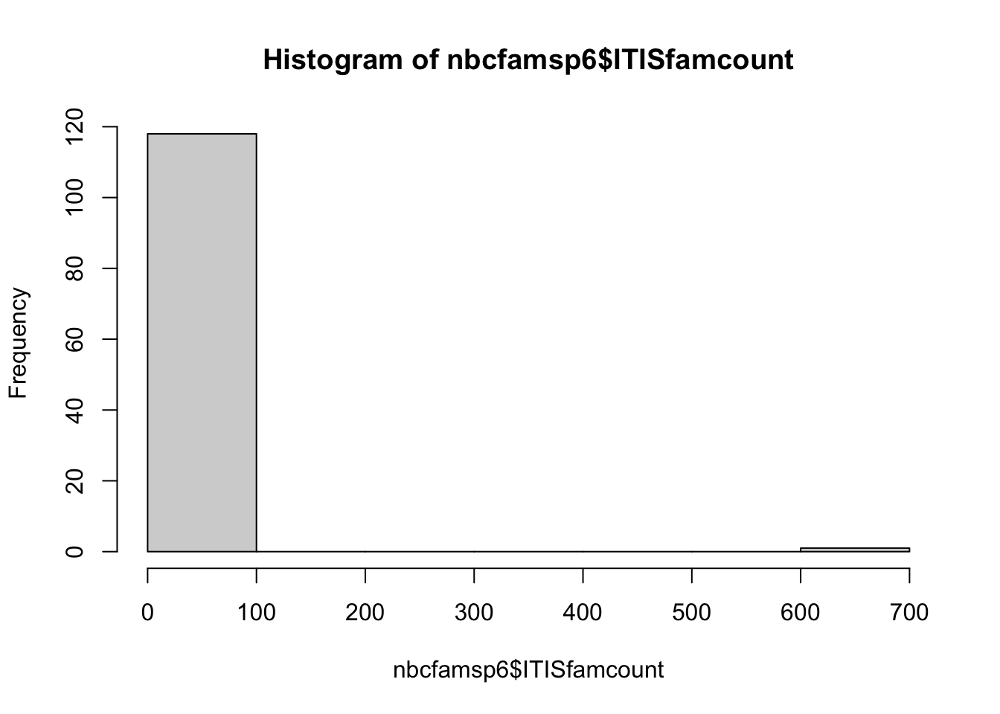

# Set a specific CRAN mirror
options(repos = c(CRAN = "https://cloud.r-project.org/"))
## First check for the required packages, install if needed, and load the libraries.
if (!requireNamespace("BiocManager", quietly = TRUE))
install.packages("BiocManager")
BiocManager::install("sangerseqR")
remotes::install_github("ropensci/bold")
remotes::install_github("ropensci/taxize")
if (!require("pacman")) install.packages("pacman")
pacman::p_load(maps, ggplot2, dplyr, countrycode, rgbif, data.table, raster, mapproj, sf, glue)Correlations between plant species and DNA barcode availability
This notebook pulls in data from various sources and makes plots to compare plants species per family to availability of DNA barcodes.
SI Appendix Figure 2A-D: Read in files and summarize for panels A-B.
First we read in the data and make some quick plots.
The combtab data corresponds to the Supplemental Dataset S1 from the publication.
combtab <- read.csv("../data/Kartzinel_et_al_Dataset_S1_20240725.csv")
head(combtab, 2) Process.ID Phylum Class Order Family Subfamily
1 API120-12 Magnoliophyta Magnoliopsida Lamiales Acanthaceae
2 CANGI002-17 Magnoliophyta Magnoliopsida Lamiales Acanthaceae Acanthoideae
Genus Species Subspecies Latitude Longitude Country
1 Peristrophe Peristrophe bicalyculata NA NA
2 Ruellia Ruellia inflata NA NA Brazil
rbcL matK trnL ITS Multiple.markers rbcL.Genbank.accession
1 rbcL rbcL---
2 rbcL matK ITS rbcL-matK--ITS
matK.Genbank.accession trnL.Genbank.accession ITS.Genbank.accession
1
2 # Round coordiantes to nearest 1 degree
combtab$lat <- as.numeric(as.character(combtab$Latitude))
combtab$lon <- as.numeric(as.character(combtab$Longitude))
# Phylum rank
barplot(sort(table(combtab$Phylum), decreasing=T), main = "Most barcoded Phyla")
# Family rank
head(sort(table(combtab$Family), decreasing=T), 10)
Fabaceae Poaceae Orchidaceae Asteraceae Rosaceae
17808 15624 14575 14410 6802
Rubiaceae Cyperaceae Lamiaceae Euphorbiaceae Ericaceae
6690 6214 5325 4863 4057 barplot(sort(table(combtab$Family), decreasing=T), main = "Most barcoded Families")
head(table(combtab$Family, combtab$Multiple.markers), 2)
---ITS --trnL- -matK-- -matK-trnL- #NAME? rbcL--- rbcL---ITS
Acanthaceae 626 2 130 10 0 192 6
Achariaceae 2 1 25 0 0 132 0
rbcL--trnL- rbcL--trnL-ITS rbcL-matK-- rbcL-matK--ITS
Acanthaceae 25 1 285 70
Achariaceae 0 0 136 6
rbcL-matK-trnL- rbcL-matK-trnL-ITS
Acanthaceae 77 16
Achariaceae 1 1# the most barcoded plant species in the world
sort(table(combtab$Species), decreasing=T)[1:5] # by specimens
Bryum argenteum
7495 551
Scorpidium cossonii Acanthorrhynchium papillatum
354 195
Aneura pinguis
195 Plot family abundances in ITIS and compare with barcodes: this section gives us panels A and B of the figure
The infam data corresponds to the Supplemental Dataset S2 from the publication.
infam <- read.csv("../data/allFamNames.csv")
ITISfamcount <- sort(table(infam$family), decreasing=T)
# Create a useful matrix for summarizing the BOLD counts with respect to ITIS matches
famcountmat <- matrix(0, nrow = length(ITISfamcount), ncol = 9)
colnames(famcountmat)<-c("rank", "ITISfamname", "ITISfamcount", "BOLDspecimencount", "BOLDspeccount", "trnLcount", "rbcLcount", "matKcount", "ITScount")
famcountmat<-data.frame(famcountmat)
famcountmat[,1]<-seq(1,length(ITISfamcount))
famcountmat[,2]<-names(ITISfamcount)
famcountmat[,3]<-ITISfamcount
# Make count of specimens by family
combtabfamilycount <- table(combtab$Family)
famcountmat[,4] <- combtabfamilycount[match(famcountmat[,2], names(combtabfamilycount))]
# Make count of species by family
combtabspeciescount <- tapply(combtab$Species, combtab$Family, function(x) length(unique(x)))
famcountmat[,5] <- combtabspeciescount[match(famcountmat[,2], names(combtabspeciescount))]
# Make count of trnL by family
combtabtrnLcount <- tapply(combtab$trnL, combtab$Family, function(x) length(which(x == "trnL")))
famcountmat[,6] <- combtabtrnLcount[match(famcountmat[,2], names(combtabtrnLcount))]
# Make count of rbcL by family
combtabrbcLcount <- tapply(combtab$rbcL, combtab$Family, function(x) length(which(x=="rbcL")))
famcountmat[,7] <- combtabrbcLcount[match(famcountmat[,2], names(combtabrbcLcount))]
# Make count of matK by family
combtabmatKcount <- tapply(combtab$matK, combtab$Family, function(x) length(which(x=="matK")))
famcountmat[,8] <- combtabmatKcount[match(famcountmat[,2], names(combtabmatKcount))]
# Make count of ITS by family
combtabITScount <- tapply(combtab$ITS, combtab$Family, function(x) length(which(x=="ITS")))
famcountmat[,9] <- combtabITScount[match(famcountmat[,2], names(combtabITScount))]
write.csv(famcountmat, "../data/DatasetS2_trnL_rbcL_matK_ITS.csv")Summarize the data:
get_genera_from_family <- function(family_name) {
tsn <- get_tsn(family_name, rows = 1, db = "itis")
if (!is.na(tsn)) {
result <- downstream(tsn, downto = "genus", db = "wfo")
if (!is.null(result[[1]])) {
return(result[[1]]$taxonname)
}
}
return(NULL)
}install.packages("rgbif")
The downloaded binary packages are in
/var/folders/0y/r_pk_m1j77vbq82t895ph8780000gq/T//RtmpY3Px6a/downloaded_packageslibrary(rgbif)
# Function to get genera from GBIF
get_genera_gbif <- function(family) {
res <- name_backbone(name = family, rank = "family") # Get family details
if (!is.null(res$usageKey)) {
# Search for genera within this family
genera_data <- name_usage(key = res$usageKey, rank = "genus", limit = 100)
return(unique(genera_data$data$scientificName))
} else {
return(NULL)
}
}
# Example list of plant families
plant_families <- c("Poaceae", "Fabaceae", "Asteraceae", "Orchidaceae", "Rosaceae")
# Retrieve genera for each family
all_genera <- lapply(plant_families, get_genera_gbif)
names(all_genera) <- plant_families
# Print results
print(all_genera)$Poaceae
[1] "Poaceae"
$Fabaceae
[1] "Fabaceae"
$Asteraceae
[1] "Asteraceae"
$Orchidaceae
[1] "Orchidaceae"
$Rosaceae
[1] "Rosaceae"# Number of taxa
nrow(famcountmat)[1] 730sum(famcountmat$ITISfamcount)[1] 51925range(famcountmat$ITISfamcount)[1] 1 5061quantile(famcountmat$ITISfamcount) 0% 25% 50% 75% 100%
1.00 1.00 4.00 27.75 5061.00 median(famcountmat$ITISfamcount)[1] 4# Number of family names in ITIS with barcodes
length(which(is.na(famcountmat$BOLDspecimencount) == F))[1] 609length(which(is.na(famcountmat$BOLDspecimencount) == F))/nrow(famcountmat)[1] 0.8342466# Number of family names ITIS without barcodes
length(which(is.na(famcountmat$BOLDspecimencount)))[1] 121length(which(is.na(famcountmat$BOLDspecimencount)))/nrow(famcountmat)[1] 0.1657534# Characterize the no-barcode families (i.e., "nbc" families)
nbcfams <- famcountmat[which(is.na(famcountmat$BOLDspecimencount)),]
nbcfams <- nbcfams[order(nbcfams$ITISfamcount),] # reorder by ITIS fam size
head(nbcfams, 2) rank ITISfamname ITISfamcount BOLDspecimencount BOLDspeccount
469 469 Alzateaceae 1 NA NA
471 471 Ambuchananiaceae 1 NA NA
trnLcount rbcLcount matKcount ITScount
469 NA NA NA NA
471 NA NA NA NAtail(nbcfams, 2) rank ITISfamname ITISfamcount BOLDspecimencount BOLDspeccount
124 124 Balantiopsidaceae 62 NA NA
45 45 Hydrophyllaceae 203 NA NA
trnLcount rbcLcount matKcount ITScount
124 NA NA NA NA
45 NA NA NA NAsum(nbcfams[,3])[1] 823dim(nbcfams)[1] 121 9head(sort(nbcfams$ITISfamname), 2) [1] "Alzateaceae" "Ambuchananiaceae"range(nbcfams$ITISfamcount)[1] 1 203hist(nbcfams$ITISfamcount)
median(nbcfams$ITISfamcount)[1] 1head(nbcfams[order(nbcfams[,3]),], 2) rank ITISfamname ITISfamcount BOLDspecimencount BOLDspeccount
469 469 Alzateaceae 1 NA NA
471 471 Ambuchananiaceae 1 NA NA
trnLcount rbcLcount matKcount ITScount
469 NA NA NA NA
471 NA NA NA NAhead(nbcfams[which(nbcfams[,3] == 1),], 2) rank ITISfamname ITISfamcount BOLDspecimencount BOLDspeccount
469 469 Alzateaceae 1 NA NA
471 471 Ambuchananiaceae 1 NA NA
trnLcount rbcLcount matKcount ITScount
469 NA NA NA NA
471 NA NA NA NAdim(nbcfams[which(nbcfams[,3] == 1),])[1] 68 9nrow(nbcfams[which(nbcfams[,3] == 1),])/nrow(nbcfams)[1] 0.5619835head(nbcfams[which(nbcfams[,3]<5),], 2) rank ITISfamname ITISfamcount BOLDspecimencount BOLDspeccount
469 469 Alzateaceae 1 NA NA
471 471 Ambuchananiaceae 1 NA NA
trnLcount rbcLcount matKcount ITScount
469 NA NA NA NA
471 NA NA NA NAdim(nbcfams[which(nbcfams[,3]<5),])[1] 93 9nrow(nbcfams[which(nbcfams[,3]<5),])/nrow(nbcfams)[1] 0.768595head(nbcfams[which(nbcfams$ITISfamname == "Heliophytaceae"),], 2)[1] rank ITISfamname ITISfamcount BOLDspecimencount
[5] BOLDspeccount trnLcount rbcLcount matKcount
[9] ITScount
<0 rows> (or 0-length row.names)head(nbcfams[which(nbcfams$ITISfamname == "Calliergonaceae"),], 2) rank ITISfamname ITISfamcount BOLDspecimencount BOLDspeccount trnLcount
203 203 Calliergonaceae 21 NA NA NA
rbcLcount matKcount ITScount
203 NA NA NA# Summarize families in BOLD not in ITIS
boldfamnames <- unique(combtab$Family)
length(boldfamnames) #651[1] 651# Families in BOLD not matched by ITIS
nomatchnames <- boldfamnames[which(boldfamnames %in% famcountmat$ITISfamname == F)]
nomatchnames <- nomatchnames[which(nomatchnames != "")]
length(nomatchnames) #42[1] 42length(nomatchnames)/length(boldfamnames) #0.06451613[1] 0.06451613# Counts of specimens in families in BOLD not matched by ITIS
combtab$family_name <- factor(combtab$Family)
head(sort(table(droplevels(combtab[which(combtab$family_name %in% nomatchnames),]$family_name)), decreasing=T), 2)
Chenopodiaceae Asphodelaceae
818 798 sum(sort(table(droplevels(combtab[which(combtab$family_name %in% nomatchnames),]$family_name)), decreasing=T))[1] 3898sum(sort(table(droplevels(combtab[which(combtab$family_name %in% nomatchnames),]$family_name)), decreasing=T))/nrow(combtab)[1] 0.01383894median(sort(table(droplevels(combtab[which(combtab$family_name %in% nomatchnames),]$family_name)), decreasing=T))[1] 8# Number of specimens not identified to family
length(which(combtab$family_name == ""))[1] 0SI Appendix Figure 2A-D: Plot panels A-B
# Plot family count by specimens: Panel A
plotcorrs <- famcountmat[complete.cases(famcountmat[,3:4]),]
summary(lm(log(as.numeric(plotcorrs$BOLDspecimencount)) ~ log(as.numeric(plotcorrs$ITISfamcount))))
Call:
lm(formula = log(as.numeric(plotcorrs$BOLDspecimencount)) ~ log(as.numeric(plotcorrs$ITISfamcount)))
Residuals:
Min 1Q Median 3Q Max
-4.1891 -0.8690 0.1937 0.8946 4.4466
Coefficients:
Estimate Std. Error t value Pr(>|t|)
(Intercept) 2.36350 0.07568 31.23 <2e-16
log(as.numeric(plotcorrs$ITISfamcount)) 0.82925 0.02606 31.82 <2e-16
(Intercept) ***
log(as.numeric(plotcorrs$ITISfamcount)) ***
---
Signif. codes: 0 '***' 0.001 '**' 0.01 '*' 0.05 '.' 0.1 ' ' 1
Residual standard error: 1.301 on 607 degrees of freedom
Multiple R-squared: 0.6251, Adjusted R-squared: 0.6245
F-statistic: 1012 on 1 and 607 DF, p-value: < 2.2e-16plotcorrs_ggplot_BOLDspecimen_ITISfamily <- ggplot(
plotcorrs, aes(x=log(ITISfamcount), y=log(BOLDspecimencount))) +
geom_point(pch = 1) +
theme_classic() +
xlab("Log of ITIS family count") +
ylab("Log of BOLD specimen count") +
geom_abline(intercept = 0, slope = 1, color = "black", linewidth = 1, linetype = "dashed") +
geom_smooth(method = "lm", se=FALSE, linewidth=1, color = "darkgreen") +
scale_y_continuous(breaks = seq(0,9, by = 3)) +
scale_x_continuous(breaks = seq(0,9, by = 3))
plotcorrs_ggplot_BOLDspecimen_ITISfamily`geom_smooth()` using formula = 'y ~ x'#ggsave("plotcorrs_ggplot_BOLDspecimen_ITISfamily.pdf", plotcorrs_ggplot_BOLDspecimen_ITISfamily, width = 10, height = 8, units = "cm")
# Summary stats for panel A
plotcorrs_summary <- plotcorrs %>% dplyr::summarize(sumspecimens = sum(BOLDspecimencount))
plotcorrs_summary sumspecimens
1 277771# Plot family count by species: PANEL B
plotcorrs_ggplot_BOLDspecies_ITISfamily <- ggplot(
plotcorrs, aes(x=log(ITISfamcount), y=log(BOLDspeccount))) +
geom_point(pch = 1) +
theme_classic() +
xlab("Log of ITIS family count") +
ylab("Log of BOLD species count") +
geom_abline(intercept = 0, slope = 1, color = "black", linewidth = 1, linetype = "dashed") +
geom_smooth(method = "lm", se=FALSE, linewidth=1, color = "darkgreen") +
scale_y_continuous(breaks = seq(0,9, by = 3)) + scale_x_continuous(breaks = seq(0,9, by = 3))
plotcorrs_ggplot_BOLDspecies_ITISfamily `geom_smooth()` using formula = 'y ~ x'
#ggsave("plotcorrs_ggplot_BOLDspecies_ITISfamily.pdf", plotcorrs_ggplot_BOLDspecies_ITISfamily, width = 10, height = 8, units = "cm")
#summary stats for panel B
plotcorrs_summary <- plotcorrs %>% summarize(sumspecies = sum(BOLDspeccount))
plotcorrs_summary sumspecies
1 101674SI Appendix Figure 2A-D: Read in files and summarize for panels C-D.
Now read in the data from downloading all trnL P6 data from the European Nucleotide Archive at EMBL-EBI. More details for the download can be found in the “Building the datasets” section of the Methods in the publication. This data corresponds to dataset S3 in the Supplement.
emblp6 <- read.csv("../data/Kartzinel_et_al_Dataset_S3_20240725.csv")
nrow(emblp6)[1] 157020length(unique(emblp6$trnL.P6.sequence)) # number of unique sequences [1] 21467#levels(factor(emblp6$Family)) # uncomment and run to print out all the family names
length(unique(emblp6$Family))[1] 666157020/5324 # fold difference between number in BOLD vs EMBL[1] 29.49286emblp6_nofamily <- subset(emblp6, Family == "")
# Build the same kind of matrix as above
famcountmatp6 <- matrix(0, nrow = length(ITISfamcount), ncol = 5)
colnames(famcountmatp6) <- c("rank", "ITISfamname", "ITISfamcount", "p6seqcount", "p6speccount")
famcountmatp6 <- data.frame(famcountmatp6)
famcountmatp6[,1] <- seq(1,length(ITISfamcount))
famcountmatp6[,2] <- names(ITISfamcount)
famcountmatp6[,3] <- ITISfamcount
length(unique(emblp6$Family))[1] 666#unique(emblp6$family_name) # uncomment to print out all the family names
write.csv(famcountmatp6, "../data/DatasetS2_P6_additions.csv")
# Make count of specimens by family
emblp6count <- table(emblp6$Family)
famcountmatp6[,4] <- emblp6count[match(famcountmatp6[,2], names(emblp6count))]
length(emblp6count)[1] 666sum(emblp6count)[1] 157020# Make count of species by family
emblp6speciescount <- tapply(emblp6$Species, emblp6$Family, function(x) length(unique(x)))
famcountmatp6[,5] <- emblp6speciescount[match(famcountmatp6[,2], names(emblp6speciescount))]Summarize the data:
# Number of taxa
nrow(famcountmatp6)[1] 730sum(famcountmatp6$ITISfamcount)[1] 51925range(famcountmatp6$ITISfamcount)[1] 1 5061quantile(famcountmatp6$ITISfamcount) 0% 25% 50% 75% 100%
1.00 1.00 4.00 27.75 5061.00 median(famcountmatp6$ITISfamcount)[1] 4# Number of family names in ITIS with barcodes
length(which(is.na(famcountmatp6$p6seqcount) == F))[1] 611length(which(is.na(famcountmatp6$p6seqcount) == F))/nrow(famcountmatp6)[1] 0.8369863# Number of family names ITIS without barcodes
length(which(is.na(famcountmatp6$p6seqcount)))[1] 119length(which(is.na(famcountmatp6$p6seqcount)))/nrow(famcountmatp6)[1] 0.1630137# Characterize the no-barcode families
nbcfamsp6 <- famcountmatp6[which(is.na(famcountmatp6$p6seqcount)),]
nbcfamsp6 <- nbcfamsp6[order(nbcfamsp6$ITISfamcount),] # reorder by ITIS fam size
head(nbcfamsp6, 2) rank ITISfamname ITISfamcount p6seqcount p6speccount
469 469 Alzateaceae 1 NA NA
472 472 Anarthriaceae 1 NA NAtail(nbcfamsp6, 2) rank ITISfamname ITISfamcount p6seqcount p6speccount
129 129 Selaginellaceae 56 NA NA
15 15 Xanthorrhoeaceae 658 NA NAsum(nbcfamsp6[,3])[1] 1069dim(nbcfamsp6)[1] 119 5head(sort(nbcfamsp6 $ITISfamname), 2)[1] "Alzateaceae" "Amphidiaceae"range(nbcfamsp6 $ITISfamcount)[1] 1 658hist(nbcfamsp6 $ITISfamcount)
median(nbcfamsp6 $ITISfamcount)[1] 1head(nbcfamsp6[order(nbcfamsp6[,3]),], 2) rank ITISfamname ITISfamcount p6seqcount p6speccount
469 469 Alzateaceae 1 NA NA
472 472 Anarthriaceae 1 NA NAhead(nbcfamsp6[which(nbcfamsp6[,3]==1),], 2) rank ITISfamname ITISfamcount p6seqcount p6speccount
469 469 Alzateaceae 1 NA NA
472 472 Anarthriaceae 1 NA NAdim(nbcfamsp6[which(nbcfamsp6[,3]==1),])[1] 76 5nrow(nbcfamsp6[which(nbcfamsp6[,3]==1),])/nrow(nbcfamsp6)[1] 0.6386555head(nbcfamsp6[which(nbcfamsp6[,3]<5),], 2) rank ITISfamname ITISfamcount p6seqcount p6speccount
469 469 Alzateaceae 1 NA NA
472 472 Anarthriaceae 1 NA NAdim(nbcfamsp6[which(nbcfamsp6[,3]<5),])[1] 100 5nrow(nbcfamsp6[which(nbcfamsp6[,3]<5),])/nrow(nbcfamsp6)[1] 0.8403361head(nbcfamsp6[which(nbcfamsp6 $ITISfamname=="Heliophytaceae"),], 2)[1] rank ITISfamname ITISfamcount p6seqcount p6speccount
<0 rows> (or 0-length row.names)head(nbcfamsp6[which(nbcfamsp6 $ITISfamname=="Calliergonaceae"),], 2)[1] rank ITISfamname ITISfamcount p6seqcount p6speccount
<0 rows> (or 0-length row.names)# Summarize families in embl not in ITIS
p6famnames <- unique(emblp6$Family)
length(p6famnames)[1] 666# Families in embl not matched by ITIS
nomatchnamesp6 <- p6famnames[which(p6famnames %in% famcountmatp6$ITISfamname == F)]
nomatchnamesp6 <- nomatchnamesp6[which(nomatchnamesp6 != "")]
length(nomatchnamesp6)[1] 55length(nomatchnamesp6)/length(p6famnames)[1] 0.08258258# Counts of specimens in families in embl not matched by ITIS
emblp6$family_name <- factor(emblp6$Family)
head(sort(table(droplevels(emblp6[which(emblp6 $family_name %in% nomatchnamesp6),]$family_name)), decreasing=T), 2)
Hyacinthaceae Chenopodiaceae
672 347 sum(sort(table(droplevels(emblp6[which(emblp6 $family_name %in% nomatchnamesp6),]$family_name)), decreasing=T))[1] 1809sum(sort(table(droplevels(emblp6[which(emblp6 $family_name %in% nomatchnamesp6),]$family_name)), decreasing=T))/nrow(combtab)[1] 0.006422432median(sort(table(droplevels(combtab[which(combtab$family_name %in% nomatchnamesp6),]$family_name)), decreasing=T))[1] 8# Number of specimens not identified to family
length(which(emblp6$family_name == ""))[1] 0Write out the Supplemental Dataset S2
ds_s2 <- merge(famcountmat, famcountmatp6, by=c("rank","ITISfamname","ITISfamcount"))
write.csv(ds_s2, glue("../data/Kartzinel_et_al_Dataset_S2_{params$today}.csv"))SI Appendix Figure 2A-D: Plot panels C-D
# Plot correlations - family count by specimens: Panel C
plotcorrs <- famcountmatp6[complete.cases(famcountmatp6[,3:4]),]
plotcorrs_ggplot_family_sequences <- ggplot(
plotcorrs, aes(x=log(ITISfamcount), y=log(p6seqcount))) +
geom_point(pch = 1) +
theme_classic() +
xlab("Log of ITIS family count") +
ylab("Log of trnL-P6 sequence count") +
geom_abline(intercept = 0, slope = 1, color = "black", linewidth = 1, linetype = "dashed") +
geom_smooth(method = "lm", se=FALSE, linewidth=1, color = "darkgreen") +
scale_y_continuous(breaks = seq(0,9, by = 3)) +
scale_x_continuous(breaks = seq(0,9, by = 3))
plotcorrs_ggplot_family_sequences`geom_smooth()` using formula = 'y ~ x'#ggsave("plotcorrs_ggplot_family_sequences.pdf", plotcorrs_ggplot_family_sequences, width = 10, height = 8, units = "cm")
# Summarize for panel C
plotcorrs_summary <- plotcorrs %>% dplyr::summarize(sumP6sequences = sum(p6seqcount))
plotcorrs_summary sumP6sequences
1 155211# Family count by species: Panel D
plotcorrs_ggplot_family_sequencespecies <- ggplot(
plotcorrs, aes(x=log(ITISfamcount), y=log(p6speccount))) +
geom_point(pch = 1) +
theme_classic() +
xlab("Log of ITIS family count") +
ylab("Log of trnL-P6 species count") +
geom_abline(intercept = 0, slope = 1, color = "black", linewidth = 1, linetype = "dashed") +
geom_smooth(method = "lm", se=FALSE, linewidth=1, color = "darkgreen") +
scale_y_continuous(breaks = seq(0,9, by = 3)) +
scale_x_continuous(breaks = seq(0,9, by = 3))
plotcorrs_ggplot_family_sequencespecies `geom_smooth()` using formula = 'y ~ x'#ggsave("plotcorrs_ggplot_family_sequencespecies.pdf", plotcorrs_ggplot_family_sequencespecies, width = 10, height = 8, units = "cm")
# Summarize for panel D
plotcorrs_summary <- plotcorrs %>% summarize(sump6speccount = sum(p6speccount))
plotcorrs_summary sump6speccount
1 69873